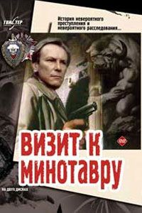

Аркадий Вайнер, Георгий Вайнер. Визит к Минотавру
РОМАН
* КНИГА ПЕРВАЯ. Вход в лабиринт
Глава 1 Улыбка Королевы
И кода тоже не получилась. Здесь должно быть высокое, просто кричащее пиццикато, но звук выходил тупой, тяжелый, неподвижный. Сзади, там, где тускнели лампионы, раздался смех. Плыла, тяжело дыша, жаркая венецианская ночь. Дамы обмахивались веерами, и кавалеры шептали им на ушко что-то, наверное, гривуазное, а они улыбались, и Антонио все время слышал шорох разговора в зале, и от этого проклятая скрипка звучала еще хуже, пока кто-то отчетливо как камень в воду не сказал:
- А ведь хороший резчик по дереву был!
Тогда Антонио сбросил смычок со струн, и скрипка противно вскрикнула, злорадно, подло, и в зале все лениво и равнодушно захлопали, решив, что пьеса окончена, слава богу...
На негнущихся голенастых ногах прошагал к себе в комнату Страдивари, долго пил из кувшина, пока, булькнув, струйка не иссякла. Вода была теплая, вязкая, и жажда не проходила. Антонио стянул с головы парик и вытер им воспаленное, мокрое от пота лицо, долго сидел без чувств и мыслей, и только огромная утомительная пустота заливала его, как море. Кто-то постучал в дверь, но он не откликнулся, потому что ужин у графа Монци был бы сейчас для него невыносимой пыткой, да и не имело теперь значения, откажет ли ему в дальнейшем покровительстве граф, жизнь ведь все равно была уже закончена.
От темноты и одиночества немного прошло напряжение, и Антонио почувствовал сильную жалость к себе. Он зажег сальную свечу и вытащил из дорожного мешка щипчики и тонкую длинную стамеску. Взял скрипку в руки, и она вновь вызвала у него прилив ненависти пузатая, короткая, с задранным грифом, похожая на преуспевающего генуэзского купца. Антонио упер скрипку в стол и сильным точным толчком ввел металлическое жало стамески под деку. Скрипка затрещала, и треск ее испуганный, хриплый был ему тоже противен. Освободил колки, снял бессильные, дряблые струны и поднял деку. Аляповатая толстая душка, как кривой пупок, нелепо поставленная пружина, толстые от селедочного бочонка борта-обечайки.
В горестном недоумении рассматривал Антонио этот деревянный хлам, зная точно, что он никуда не годен. Господи, надоумь, объясни как же должно быть хорошо? На колокольне ударили полночь, и где-то далеко на рейде бабахнул из носовой пушки неапольский почтовый бриг, и время текло, струилось, медленно, размеренно, как вода в канале за окном, и откровение не приходило. Из окна пахнуло сыростью, рыбой, полночным бризом. Антонио встал, собрал со стола части ненавистной скрипки, подошел к окну и бросил в зеленую воду немые деревяшки. Потом, не снимая камзола и башмаков, лег на узкую кровать, поняв окончательно, что жизнь закончена, уткнулся в твердую подушку, набитую овечьей шерстью, и горько заплакал. Он плакал долго, и слезы размывали горечь, уносили рекой сегодняшний позор, намокла и согрелась подушка, ветерок из окна шевелил на макушке короткие волосы, и незаметно для себя Антонио заснул.
А когда проснулся, солнце стояло высоко, и горизонта не было видно, потому что сияющее марево воды сливалось с нежно-сиреневым небом, и ветер гнал хрустящие, кудрявые, как валансьенские кружева, облака, и только тонкая стамеска да черненые щипчики на столе напомнили ему, что жизнь окончилась еще вчера. Вспомнил и засмеялся.
В этот день Антонио Страдивари исполнилось девятнадцать лет.
Королева улыбалась ласковой чистенькой старушечьей улыбкой, и трещины расколовшегося стекла нанесли на ее лицо морщинки доброты и легкой скорби. Портрет валялся на полу, и с того места, где стоял я, казалось, будто ее величество запрокинули голову, внимательно рассматривая красное осеннее солнце, недвижимо повисшее в восточном окне гостиной.
- Девять часов шестнадцать минут, сказал эксперт Халецкий,
- Что? переспросил я.
- За восемь минут, говорю, доехали.
- Ну, слава богу, я ухмыльнулся.
- Задержись мы еще на две минуты, и тогда делу конец...
Эксперт покосился на меня, хотел что-то сказать, но на всякий случай промолчал. Мы стояли в просторной прихожей, в дверях гостиной, не спеша оглядывая разгром и беспорядок в комнате, ибо этот хаос был для нас сейчас свят и неприкосновенен, являя собой тот иррациональный порядок, который создал здесь последний побывавший перед нами человек. Вор.
- Послушайте, Халецкий, а ведь, наверное, сильно выросла бы раскрываемость преступлений, если можно было бы консервировать место происшествия. Вы как думаете?
- Не понял осторожно сказал Халецкий, ожидая какого-то подвоха.
- Чего непонятного? Вот закончим осмотр, сфотографируем, запишем, и сюда придут люди. Много всяких людей. И навсегда исчезнет масса следов и деталей, на которые мы с первого раза просто не смогли обратить внимания...
- И что же вы предлагаете?
- Я ничего не предлагаю. Просто фантазирую. Если бы можно было после осмотра опечатать квартиру и прийти сюда завтра, послезавтра и мы бы увидели так много нового...
- Прекрасный образец работы по горячим следам, сказал сварливо Халецкий.
- Вы лучше постарайтесь все это увидеть сейчас. Кроме того, я не уверен, что хозяева этой квартиры согласны погостить у вас дома... пока вы будете искать незамеченные сразу улики.
Я засмеялся:
- Да, в моих апартаментах будет трудно разместить эти рояли. И хоть я в этом мало чего понимаю, но хозяину они, наверное, нужны оба.
Сзади щелкнула входная дверь, и вошла инспектор Лаврова, а за нею собаковод Качанов с Марселем. Огромный, дымчато-серый с подпалинами пес спокойно сел в прихожей на пол, приветливо посмотрел на меня, смешно подергал черным замшевым носом.
- Я готов, всем своим видом демонстрировал Марсель, не знаю, чего уж вы тут копаетесь.
- Что, поработаем, Марселюшка? спросил я и потрепал пса по загривку. Овчарка прищурила свои янтарно-крапчатые круглые глаза.
- Станислав Палыч, вы его зря сейчас разговариваете, сказал недовольно Качанов.
- Исковой пес в работе на след должен быть уцелен, как на жареную печенку.
Лаврова чиркнула зажигалкой, затянулась сигаретой, со смешком сказала:
- А что толку-то? Все равно "...у стоянки такси собака след утратила...".
- совсем обиделся Качанов. Вашей-то фотографии в музее милицейском еще нет пока, товарищ лейтенант... А Марсель мой, между прочим, третий год там красуется. Зазря портрет на стенку вешать не станут. Притом в раме...
- Станислав Павлович, поблагодарите Качанова за комплимент, засмеялась Лаврова. Я ведь там и ваш портрет видела.
Лаврова оглядывалась в прихожей, разыскивая, куда бы ей сбросить пепел с сигареты, направилась к столику, на котором стояла большая тропическая раковина. Я опередил ее, подставив развернутую газету:
- Если нет принципиальных возражений, пепел будем стряхивать сюда. Я ведь сейчас отличаюсь от Марселя тем, что прежде чем искать, обязан сторожить тот порядок, в котором мы все это застали.
Лаврова взглянула на меня, усмехнулась:
- И опять вы правы. Я с тоской думаю об участи женщины, которая станет вашей женой.
Я кивнул:
- Я тоже. Для вас остается вариант личного самопожертвования. А теперь, как говорили дуэлянты, приступим, господа. Качанов, войдешь первым: вы с Марселем отрабатывайте след, а мы начнем свою грустную летопись.
Качанов снял с Марселя поводок, что-то шепнул ему на ухо и пустил в комнату. Я стоял, прислонившись к притолоке.
Собака, видимо, взяла след. Она занервничала, вздыбилась шерсть на загривке, судорожно подергивался нос черный, влажный, нежно-трепетный. Марсель перебежал комнату и исчез в спальне, потом снова вернулся, и двигался он все время кругами, иногда растягивая их и переворачивая в восьмерки, пока не выбежал обратно и прихожую, сделал стойку у дверного замка, и тут Качанов ловко и быстро накинул на него карабинчик поводка. Марсель стал скрести когтями дверь и вдруг неожиданно тонко взвыл:
- У-у-юу
как от мгновенной внутренней боли. Качанов открыл дверь и выскочил вслед за овчаркой на лестничную площадку, потом раздался его дробный топот по ступенькам.
- Прошу вас,
сделал я широкий жест, приглашая войти в гостиную, и добавил, обращаясь к Халецкому, хотя Лаврова отлично поняла, что говорю я это для нее, и Халецкий это знал:
- Весь наш мусор окурки, бумажки и теде и тепе складывать только на газете в прихожей...
И поскольку мы все трое знали, кому адресовано это указание, осталось оно без ответа, вроде безличного замечания
- уже совсем рассвело.
Я подошел к портрету почему-то именно портрет больше всего привлекал мое внимание. Это была очень хорошая фотография, застекленная в дорогую строгую рамку. Часть стекла еще держалась, вокруг валялись длинные, кривые, как ятаганы, обломки, рядом на паркете засохли уже побуревшие пятна крови. Там, где капли упали на стекло, они были гораздо светлее. Одна длинная капля попала прямо на фото и вытянулась в конце дарственной надписи, как нелепый, неуместный восклицательный знак.
- Королева Елизавета Бельгийская, сказал Халецкий, присевший рядом со мной на корточки.
- Это написано или вы так думаете? спросил я, проверяя себя.
- Знаю, коротко ответил эксперт. Жаль, я не понимаю по-французски интересно, что здесь начертано.
- Наверное, что-нибудь такое вроде "Люби меня, как я тебя", усмехнулся я.